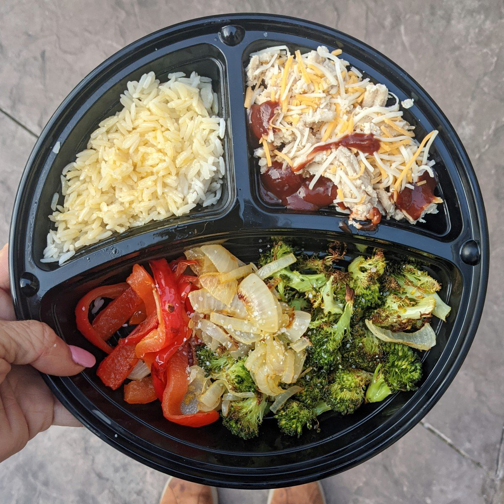

Ground Turkey, Rice, & Veggies!

Description:
Healthy, quick meal option, you can take with you!
Ingredients:
- Ground Turkey
- Grilled Broccoli
- Brown Rice
- Optional: BBQ sauce & Cheese
Preparation Steps:
- Steam Brown Rice.
- Roast veggies on 350 for 15 minutes.
- Warm the ground turkey in the microwave on High for 3 minutes. Stir and let cool.
- Combine however you see fit, and enjoy!